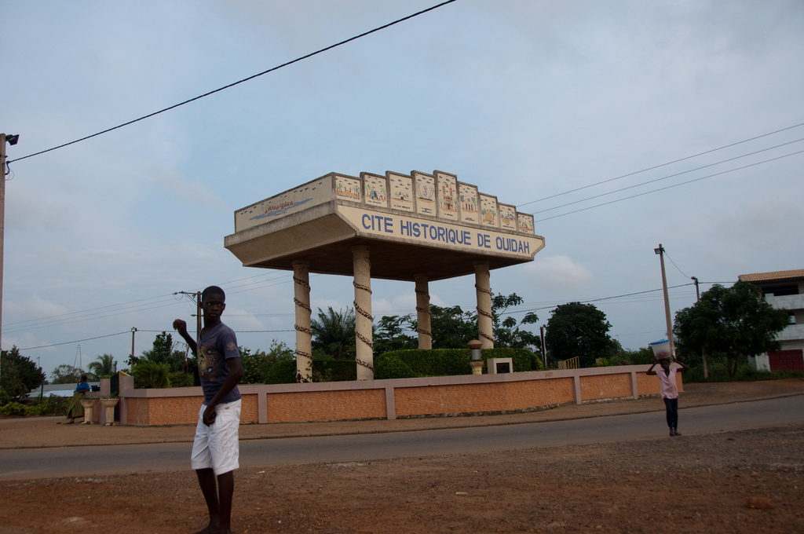

Ouidah is known for the main role she played in the slave trade during the 17th, 18th and 19th centuries, when almost a million people were embarked on ships and, from the beach of Ouidah, transported through Atlantic. Originally, however, Ouidah (formerly Glewé) was a small village in a small kingdom of Xweda. Its inhabitants lived on agriculture, hunting and fishing in the coastal lagoons - far from the dangers of the sea and tides.
The first contact between Ouidah and the Europeans took place during the sixteenth century. Although the slave trade along the Bay of Benin began immediately after, it was not until the end of the seventeenth century that European merchants began to buy slaves in the kingdom of Xweda on a large scale, establishing forts And counters in the town of Glewé. This trade ensured prosperity to the kingdom until the moment of its military invasion in 1727 by the kingdom of Dahomey: its citizens were killed, captured and dispersed, and trade with the Europeans passed over to the hands of the Dahomeans.
Ouidah